UI/UX Projects
Discover the design process behind my digital creations
The projects below showcase my approach to user-centered design, from initial research to final implementation. I believe in creating experiences that are both beautiful and functional.
Smart Pantry
Smart Pantry is a mobile app designed to help college students manage groceries, reduce food waste, and simplify meal planning. Based on research into student cooking habits, we found that busy schedules and shared living spaces often lead to forgotten ingredients, expired food, and wasted money.
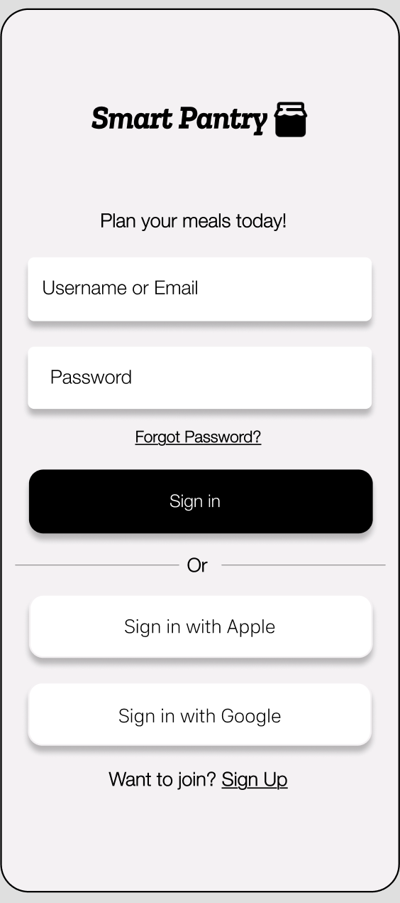
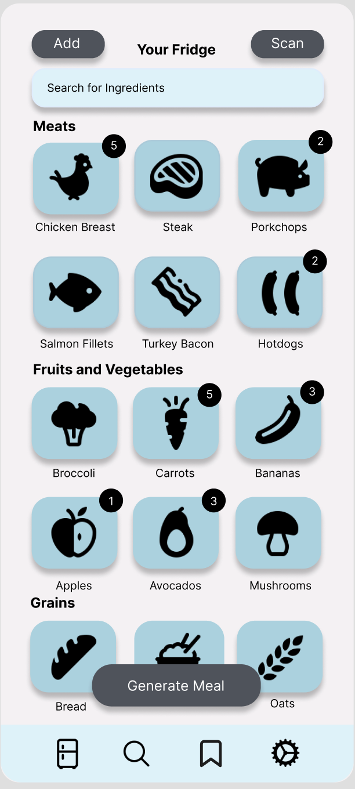
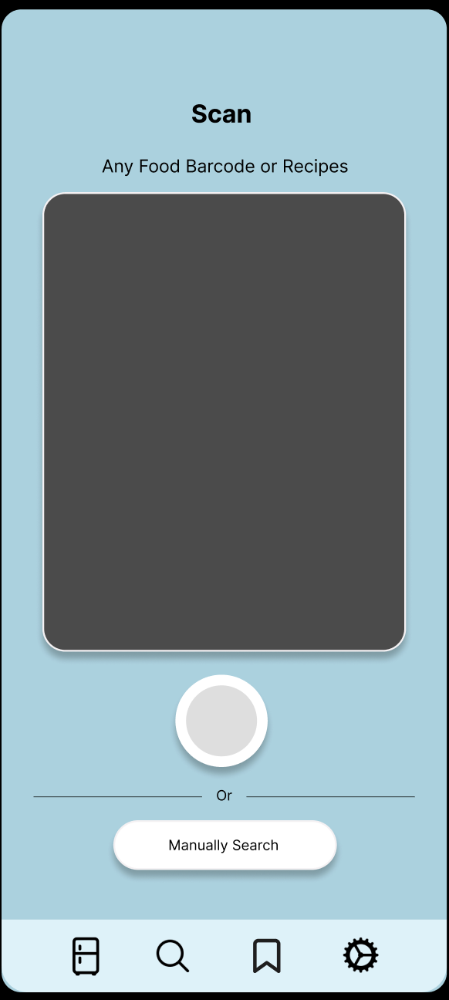
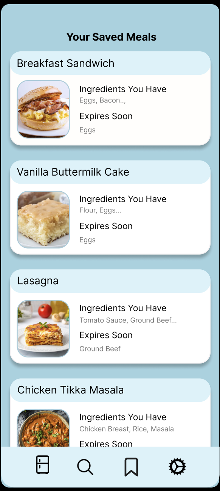
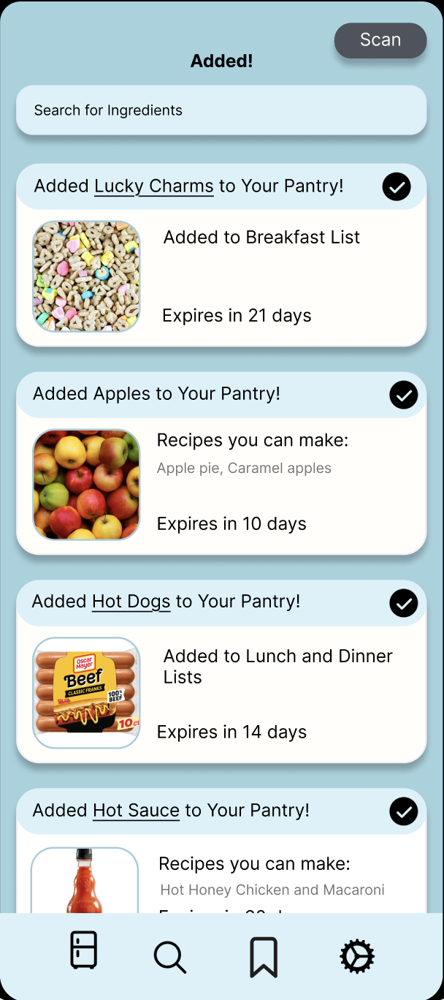
My Design Process
Research & Discovery
The process began with observing college students in their shared apartment kitchens to better understand how they prepare meals in real-life environments. This research uncovered key pain points such as forgotten groceries, poor meal planning, expired food, and unnecessary spending.
Storyboarding & Behavioral Observation
We observed students as they cooked in a shared apartment kitchen, identifying patterns in their behaviors, frustrations, and decision-making. This helped us better define opportunities for SmartPantry.
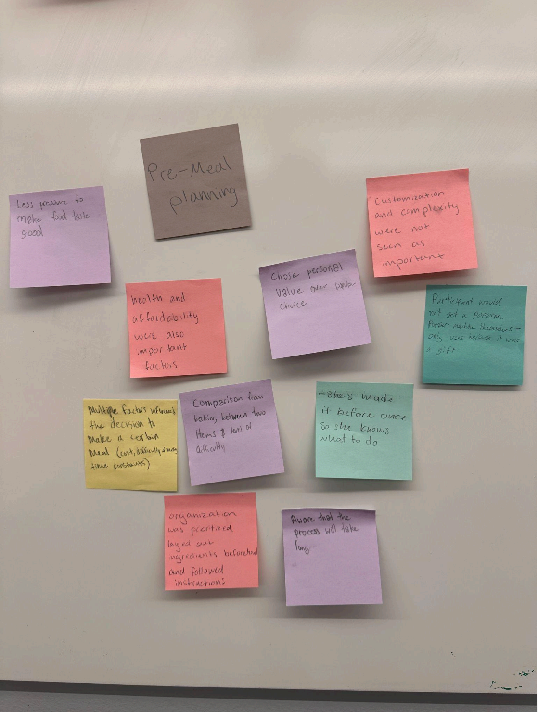
Wireframing & Prototyping
Low-fidelity wireframes were created to establish layout, information hierarchy, and navigation flow before moving into final design.
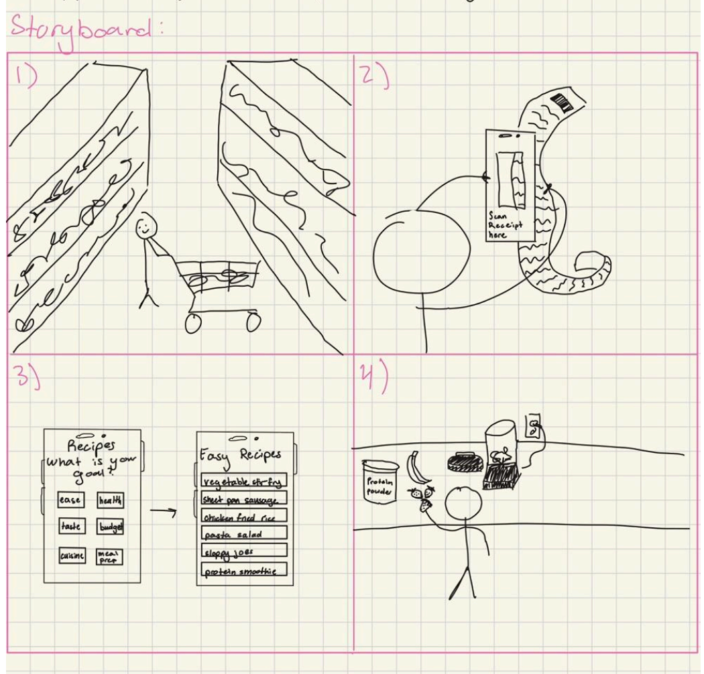
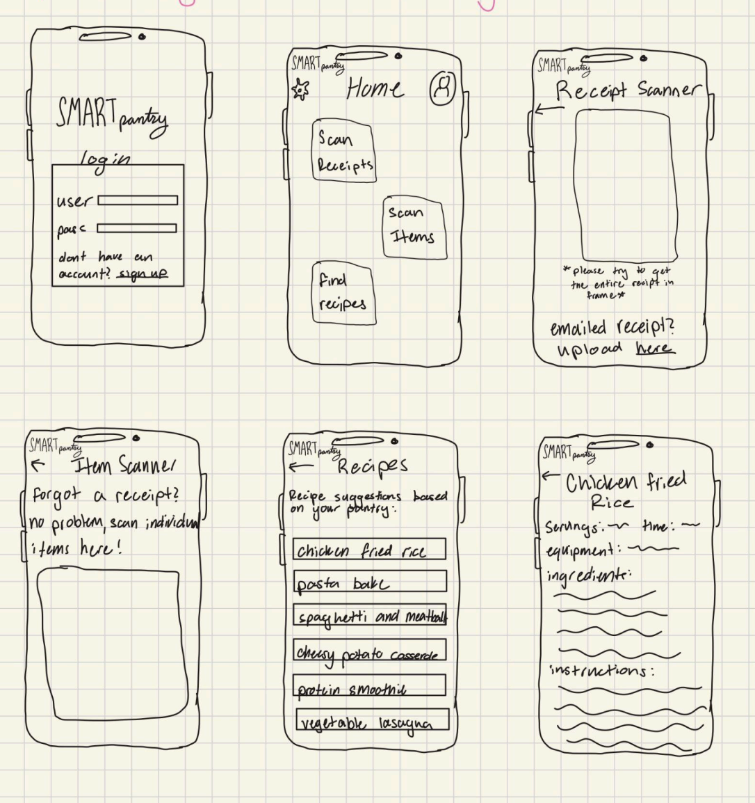
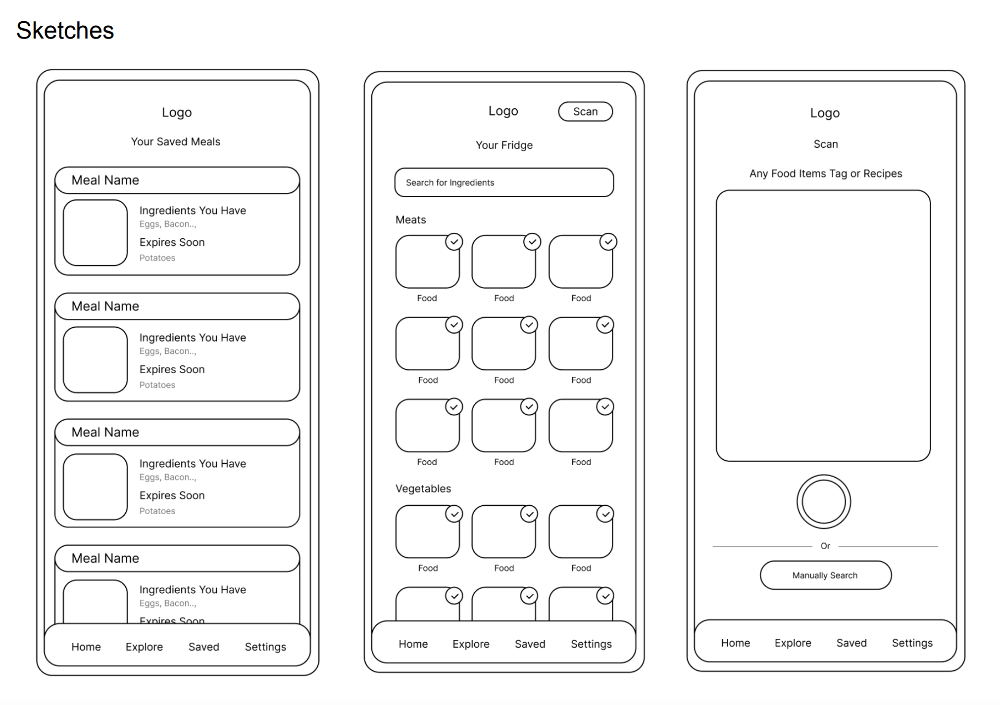
Visual Design System
A clean, modern interface that prioritizes clarity and quick access to information, making pantry management feel seamless.
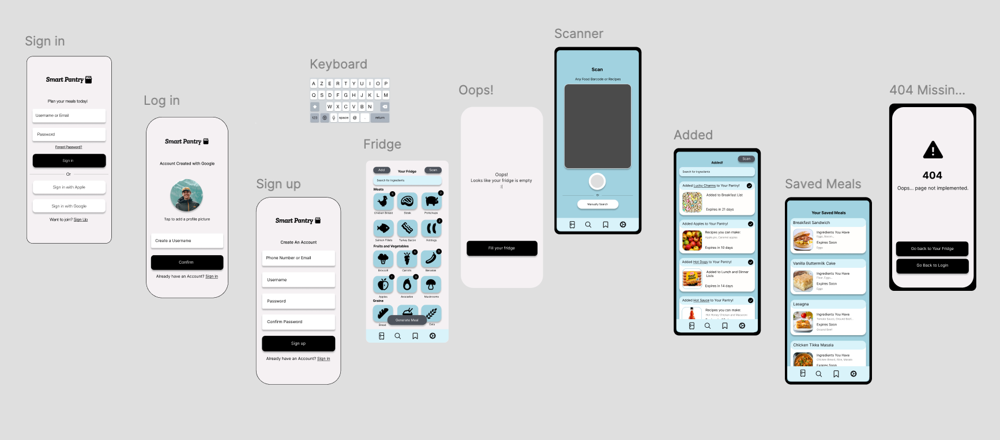
Testing & Iteration
Usability testing was conducted to evaluate navigation and task completion, leading to multiple design iterations for improvement.
Key Features
Pantry Tracking
Log and monitor ingredients to keep track of groceries and avoid duplicate purchases.
Recipe Recommendations
Get meal ideas based on available ingredients without needing to search or buy extra items.
Expiration Reminders
Smart notifications alert users when ingredients are close to expiring.
Mood Meals
A mobile application designed to track a user's mood each day, which determines the types of personalized meals they are suggested to have that day.
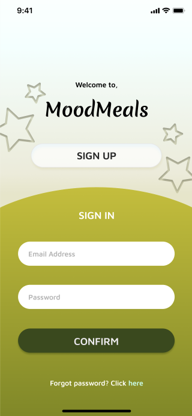
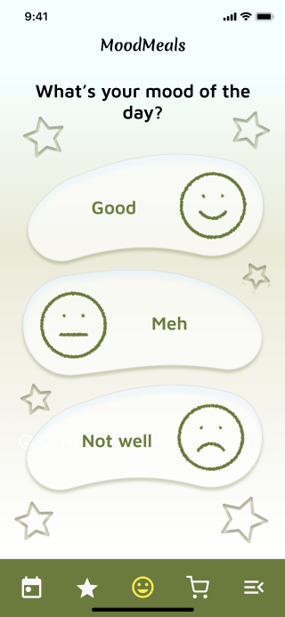
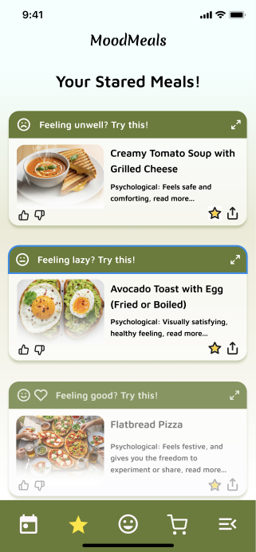
My Design Process
Research & Discovery
I conducted interviews with 20 potential users to understand their diet habits. Key insights revealed that people wanted simple recipes that they can make easily each day.
User Personas & Journey
Created a primary user persona - a typical college student who struggles with cooking daily meals and looks for simple, affordable recipes that uplift their mood.
Wireframing & Prototyping
Developed mid to high-fidelity wireframes focusing on refined elements and clearer text/images in Figma.
Visual Design System
Developed a cohesive design system with a soft pastel color palette, dream-inspired icons, and smooth micro-interactions.
Testing & Iteration
Conducted usability tests with participants and made iterations based on feedback.
Key Features
Mood Survey
Surveys user's mood throughout the day to customize meal ideas based on specific moods.
Star Meals
Generates different meals and suggestions with a starred category of user's favorites.
Calming Interface
Gentle colors and gradients for calming use.